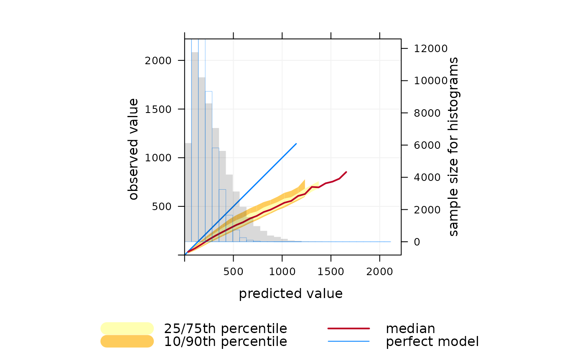

Conditional quantile estimates for model evaluation
Source:R/conditionalQuantile.R
conditionalQuantile.RdFunction to calculate conditional quantiles with flexible conditioning. The function is for use in model evaluation and more generally to help better understand forecast predictions and how well they agree with observations.
Usage
conditionalQuantile(
mydata,
obs = "obs",
mod = "mod",
type = "default",
bins = 31,
min.bin = c(10, 20),
xlab = "predicted value",
ylab = "observed value",
col = brewer.pal(5, "YlOrRd"),
key.columns = 2,
key.position = "bottom",
auto.text = TRUE,
...
)Arguments
- mydata
A data frame containing the field
obsandmodrepresenting observed and modelled values.- obs
The name of the observations in
mydata.- mod
The name of the predictions (modelled values) in
mydata.- type
typedetermines how the data are split i.e. conditioned, and then plotted. The default is will produce a single plot using the entire data. Type can be one of the built-in types as detailed incutDatae.g. “season”, “year”, “weekday” and so on. For example,type = "season"will produce four plots — one for each season.It is also possible to choose
typeas another variable in the data frame. If that variable is numeric, then the data will be split into four quantiles (if possible) and labelled accordingly. If type is an existing character or factor variable, then those categories/levels will be used directly. This offers great flexibility for understanding the variation of different variables and how they depend on one another.Type can be up length two e.g.
type = c("season", "weekday")will produce a 2x2 plot split by season and day of the week. Note, when two types are provided the first forms the columns and the second the rows.- bins
Number of bins to be used in calculating the different quantile levels.
- min.bin
The minimum number of points required for the estimates of the 25/75th and 10/90th percentiles.
- xlab
label for the x-axis, by default “predicted value”.
- ylab
label for the y-axis, by default “observed value”.
- col
Colours to be used for plotting the uncertainty bands and median line. Must be of length 5 or more.
- key.columns
Number of columns to be used in the key.
- key.position
Location of the key e.g. “top”, “bottom”, “right”, “left”. See
latticexyplotfor more details.- auto.text
Either
TRUE(default) orFALSE. IfTRUEtitles and axis labels etc. will automatically try and format pollutant names and units properly e.g. by subscripting the `2' in NO2.- ...
Other graphical parameters passed onto
cutDataandlattice:xyplot. For example,conditionalQuantilepasses the optionhemisphere = "southern"on tocutDatato provide southern (rather than default northern) hemisphere handling oftype = "season". Similarly, common axis and title labelling options (such asxlab,ylab,main) are passed toxyplotviaquickTextto handle routine formatting.
Details
Conditional quantiles are a very useful way of considering model performance against observations for continuous measurements (Wilks, 2005). The conditional quantile plot splits the data into evenly spaced bins. For each predicted value bin e.g. from 0 to 10~ppb the corresponding values of the observations are identified and the median, 25/75th and 10/90 percentile (quantile) calculated for that bin. The data are plotted to show how these values vary across all bins. For a time series of observations and predictions that agree precisely the median value of the predictions will equal that for the observations for each bin.
The conditional quantile plot differs from the quantile-quantile plot (Q-Q plot) that is often used to compare observations and predictions. A Q-Q~plot separately considers the distributions of observations and predictions, whereas the conditional quantile uses the corresponding observations for a particular interval in the predictions. Take as an example two time series, the first a series of real observations and the second a lagged time series of the same observations representing the predictions. These two time series will have identical (or very nearly identical) distributions (e.g. same median, minimum and maximum). A Q-Q plot would show a straight line showing perfect agreement, whereas the conditional quantile will not. This is because in any interval of the predictions the corresponding observations now have different values.
Plotting the data in this way shows how well predictions agree with
observations and can help reveal many useful characteristics of how well
model predictions agree with observations — across the full distribution of
values. A single plot can therefore convey a considerable amount of
information concerning model performance. The conditionalQuantile
function in openair allows conditional quantiles to be considered in a
flexible way e.g. by considering how they vary by season.
The function requires a data frame consisting of a column of observations and
a column of predictions. The observations are split up into bins
according to values of the predictions. The median prediction line together
with the 25/75th and 10/90th quantile values are plotted together with a line
showing a “perfect” model. Also shown is a histogram of predicted
values (shaded grey) and a histogram of observed values (shown as a blue
line).
Far more insight can be gained into model performance through conditioning
using type. For example, type = "season" will plot conditional
quantiles by each season. type can also be a factor or character field
e.g. representing different models used.
See Wilks (2005) for more details and the examples below.
References
Murphy, A. H., B.G. Brown and Y. Chen. (1989) Diagnostic Verification of Temperature Forecasts, Weather and Forecasting, Volume: 4, Issue: 4, Pages: 485-501.
Wilks, D. S., 2005. Statistical Methods in the Atmospheric Sciences, Volume 91, Second Edition (International Geophysics), 2nd Edition. Academic Press.
See also
The verification package for comprehensive functions for
forecast verification.
Other model evaluation functions:
TaylorDiagram(),
conditionalEval(),
modStats()
Examples
## make some dummy prediction data based on 'nox'
mydata$mod <- mydata$nox * 1.1 + mydata$nox * runif(1:nrow(mydata))
# basic conditional quantile plot
## A "perfect" model is shown by the blue line
## predictions tend to be increasingly positively biased at high nox,
## shown by departure of median line from the blue one.
## The widening uncertainty bands with increasing NOx shows that
## hourly predictions are worse for higher NOx concentrations.
## Also, the red (median) line extends beyond the data (blue line),
## which shows in this case some predictions are much higher than
## the corresponding measurements. Note that the uncertainty bands
## do not extend as far as the median line because there is insufficient
# to calculate them
conditionalQuantile(mydata, obs = "nox", mod = "mod")

## can split by season to show seasonal performance (not very
## enlightening in this case - try some real data and it will be!)
if (FALSE) { # \dontrun{
conditionalQuantile(mydata, obs = "nox", mod = "mod", type = "season")
} # }